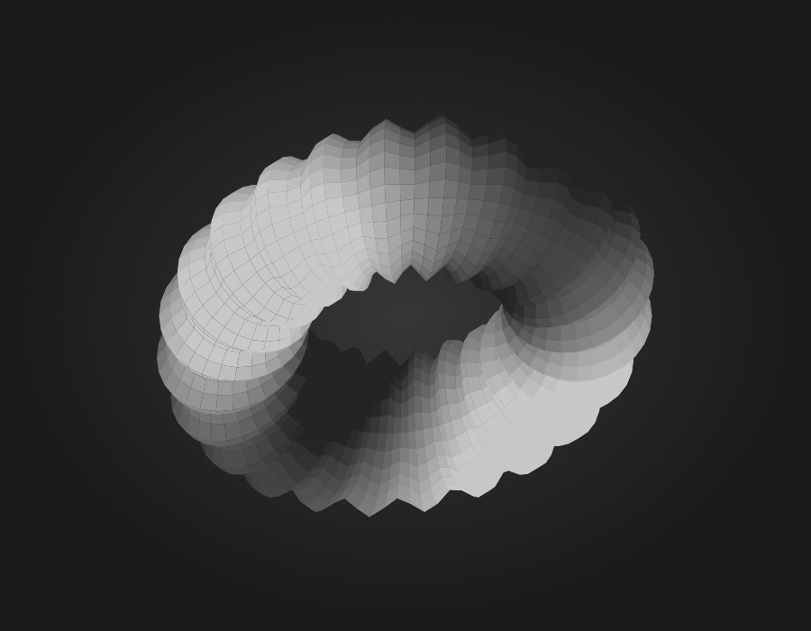

INDEPENDENT EXPLORATIONS
在光与材质之间，
探索实时世界。
我是 Jonny，一名技术美术。
在这里记录渲染研究、创作实验，
以及把想法变成画面的过程。
REAL-TIME RENDERING · MATERIALS · CURIOSITY

SURFACE STUDY / 001WEBGL EXPLORATION
LIGHT × FORM × MATERIAL
移动指针，探索光照
移动指针，探索光照
LIVE DEMO
REAL-TIME RENDERING✳MATERIAL EXPLORATION✳PROCEDURAL THINKING✳MADE WITH CURIOSITY
01 / EXPLORATIONS
实验与方向 Selected studies
从一个具体问题开始，逐步构建自己的作品。
02 / JOURNAL
研究与记录 Notes along the way
03 / ABOUT
Hello, I'm Jonny.
TECHNICAL ARTIST & CURIOUS MAKER
我关注实时渲染、材质表现，以及技术与视觉之间的连接。希望通过持续的小实验，把一个个“为什么”变成能解释、能验证的作品。
这里收集独立研究与创作记录，也保留尚未完成的想法。
保持好奇，认真观察，让作品慢慢生长。
RENDERING FIRSTLEARN BY MAKINGDOCUMENT THE PROCESS